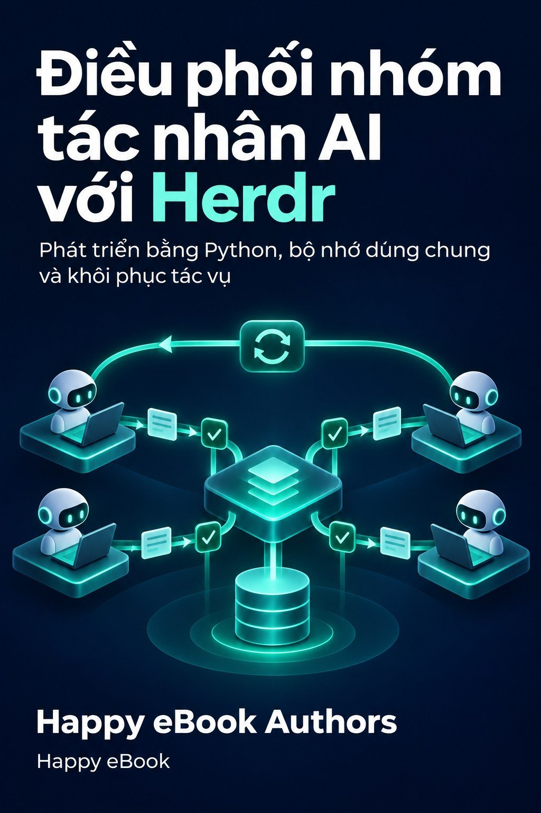

Điều phối nhóm tác nhân AI với Herdr
Phát triển bằng Python, bộ nhớ dùng chung và khôi phục tác vụ

Điều phối nhóm tác nhân AI với Herdr
Phát triển bằng Python, bộ nhớ dùng chung và khôi phục tác vụ
Điều phối nhóm tác nhân AI với Herdr là cẩm nang thực hành dành cho lập trình viên, giáo viên, người tự học và các nhóm nhỏ đã có kiến thức cơ bản về terminal, Python và Git. Từ những bài tập nhỏ, bạn sẽ học cách xác định hợp đồng công việc, phân chia trách nhiệm, điều phối tác nhân trong workspace, tab và pane của Herdr, kiểm tra độc lập kết quả mã nguồn, bàn giao hiện vật có thể xác minh và khôi phục tác vụ sau sự cố. Các ví dụ Python dẫn dắt bạn xây dựng website quản lý tác vụ, lập báo cáo nghiên cứu có nguồn, tạo pipeline biết dừng khi lỗi và triển khai hàng đợi SQLite có lease, thử lại hữu hạn và khả năng tiếp quản. Mỗi phần nhấn mạnh test có thể tái hiện, tiêu chí nghiệm thu rõ ràng và giới hạn của những gì đã được kiểm chứng. Sách gồm bài tập, bảng tham chiếu, prompt theo vai trò và phụ lục mã. Gói tài nguyên tiếng Việt v1.0.0 có thể tải miễn phí tại https://github.com/t945935/herdr-multi-agent-reader-vi/releases/tag/v1.0.0; gói này không chứa nội dung trả phí. Những tài nguyên này đi kèm sách và không được cấp giấy phép open-source chung.
作品介紹；目前未提供購買或試閱入口